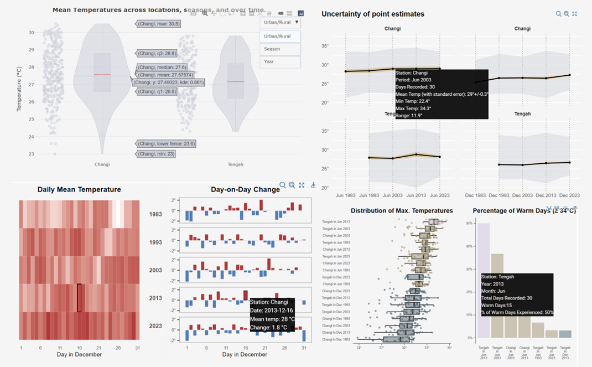
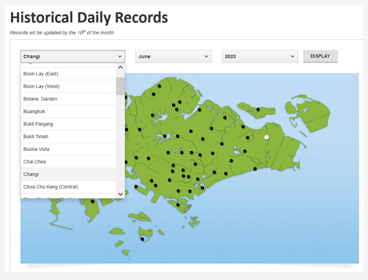
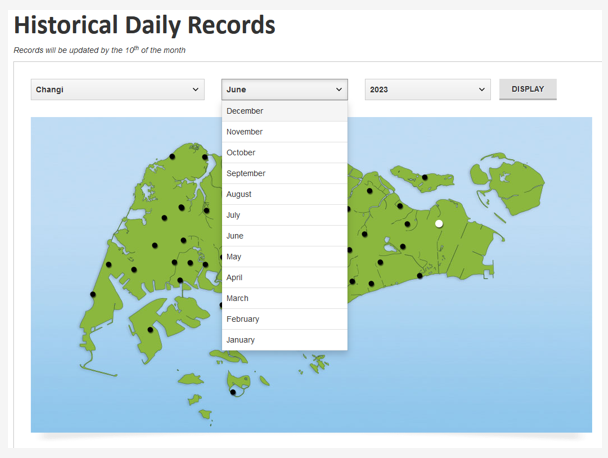
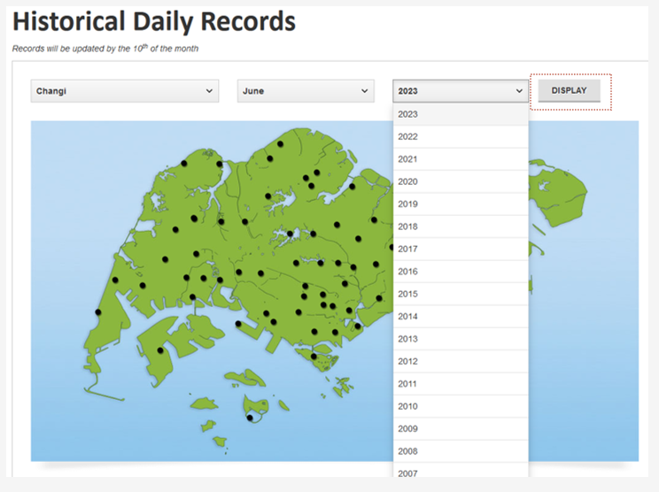
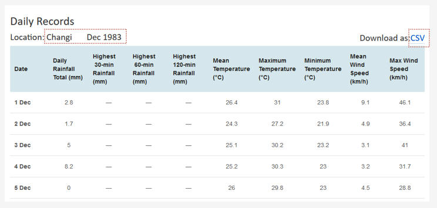
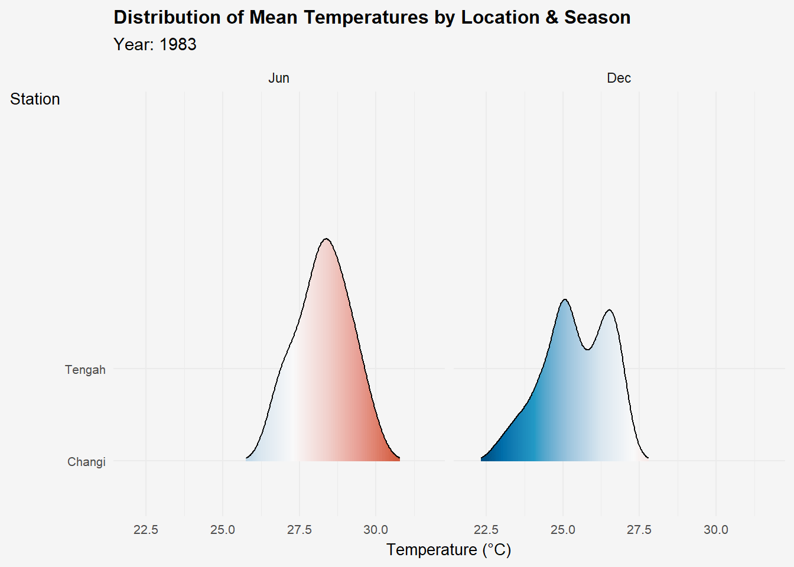

pacman::p_load(tidyverse, lubridate, janitor, fs,
knitr, kableExtra, dt,
plotly, ggiraph,
ggridges, gganimate, patchwork)Take-home Exercise 3: Be Weatherwise or Otherwise

1 It’s getting hotter in Singapore
It is one of the hottest topics in the Republic. Every year, the mercury rises and experts point to climate change as the main culprit. An analysis of weather station data by the Singapore’s National Climate Change Secretariat projects daily mean temperatures to rise by 1.4°C to 4.6°C in the future.
However, it is not out of the norm for temperatures in Singapore exhibit considerable variability, fluctuating not only from season to season but also from day to day. In 2023, for instance, the daily temperature range typically spans from a minimum of 24-27ºC to a maximum of approximately 30-34ºC, underscoring the dynamic nature of Singapore’s climate.
To get to the bottom of things, we perform an in-depth analysis of temperature data obtained from climate stations in Singapore to evaluate the accuracy of the aforementioned projection. Our investigation spans multiple decades, with records from years 1983, 1993, 2003, 2013, and 2023, thus offering a comprehensive view of temperature trends over a 40-year period.
By analysing this extensive dataset, we aim to uncover patterns, trends, and anomalies in Singapore’s temperature dynamics. We hope to provide valuable insights into the evolving climate landscape of Singapore and its potential ramifications for the future.
2 Getting Started
2.1 Loading Packages
In this exercise, we will be using the following packages:
| Package | Description |
|---|---|
| tidyverse | A collection of core packages designed for data science, used extensively for data preparation and wrangling. |
| lubridate | For manipulating date-times. |
| janitor | For quick formatting of dataframe columns. |
| fs | For retrieve a list of file names in our directory for import into R. |
| DT, knitr and kableExtra | For building tables. |
| plotly, ggiraph | To create interactive plots. |
| ggridges | For creating ridgeline plots; useful for visualising changes in distributions over time/space. |
| gganimate | Extends the grammar of graphics to include the description of animation. |
| patchwork | For plot composition in R. |
The following code chunk uses p_load() of pacman package to check if the aforementioned packages are installed in the computer. If they are, the libraries will be called into R.
2.2 The Data
The data for this analysis comes from Meteorological Service Singapore (MSS), who collects and maintains long-term records on Singapore’s weather. The information collected includes daily total rainfall and maximum temperature, broken down into daily readings since 1980. The readings are captured by 5 staffed weather stations (including the climate station at Changi Airport), nearly 100 automated weather stations, spread throughout the landscape of Singapore.
Before deciding on a weather station for analysis, it’s crucial to check Station Records to ascertain the available records at a given point in time. For our analysis, we examine the data from the Changi weather station spanning the years 1983, 1993, 2003, 2013, and 2023. This station stands out as the most suitable choice due to its comprehensive mean temperature records, dating all the way back to January 1982. Located in close proximity to developed residential areas and adjacent to the airport runway, the Changi weather station is deemed representative of a semi-urban environment by the MSS (2023). In contrast, the Tengah weather station is located near the Tengah River and is surrounded by forested areas, making it representative of a rural environment. While the data availability from the Tengah weather station may not be as extensive as that of the Changi weather station, comparing data from both areas could still provide valuable insights.
2.2.1 Data Extraction
| Step | Details | Screenshot |
| 1 | At the MSS Historical Daily Records page, there are 3 dropdown menus that allow us to select the weather station, month, and year for data extraction. For our study, we will choose Changi from the first dropdown menu. |  |
| 2 | For the 2nd dropdown menu, we will select December to extract daily records from that month. |  |
| 3 | In the third dropdown menu, we will choose the year 2023 for extraction. |  |
| 4 | Once the options have been selected, scroll further down to confirm that the daily records are reflecting the correct weather station and period. You can then proceed to download the files in CSV format. Repeat these steps for other weather stations, months, or years as required. |
 |
2.2.2 Importing Dataset
The code chunk below loads the necessary files into R environment using the following functions:
dir_ls()function from the fs package in R to list filenames in our directory where we have saved the monthly historical records.map_df()function from the purrr package is used to iterate over each file in the directory.
For each file, represented by .x, read_csv() is applied with the following arguments:
read_csv()from the readr package reads the first file in the directory and extracts the column names viacolnames(), before saving it as a headers vector.clean_names()of the janitor package converts into snake case and transliterates special characters such as the degree symbol (°) to ASCII.
# Get the list of filenames
filenames <- fs::dir_ls("data/")
# Read all files and clean the column names
data <- filenames %>%
map_df(~ read_csv(.x,
locale = locale(encoding = "latin1"),
col_types = cols(.default = "character")
) %>%
janitor::clean_names()
)
glimpse(data)Rows: 549
Columns: 16
$ station <chr> "Tengah", "Tengah", "Tengah", "Tengah", "T…
$ year <chr> "1993", "1993", "1993", "1993", "1993", "1…
$ month <chr> "6", "6", "6", "6", "6", "6", "6", "6", "6…
$ day <chr> "1", "2", "3", "4", "5", "6", "7", "8", "9…
$ daily_rainfall_total_mm <chr> "6.5", "0", "0", "2.2", "8", "55.1", "0.5"…
$ highest_30_min_rainfall_mm <chr> "\u0097", "\u0097", "\u0097", "\u0097", "\…
$ highest_60_min_rainfall_mm <chr> "\u0097", "\u0097", "\u0097", "\u0097", "\…
$ highest_120_min_rainfall_mm <chr> "\u0097", "\u0097", "\u0097", "\u0097", "\…
$ mean_temperature_c <chr> "27.4", "29.1", "29.5", "28.7", "27.4", "2…
$ maximum_temperature_c <chr> "32.6", "33.8", "33.1", "33.3", "32.4", "3…
$ minimum_temperature_c <chr> "24.6", "25.1", "26.6", "24.8", "22.9", "2…
$ mean_wind_speed_km_h <chr> "6.3", "7.7", "9.8", "7.2", "8.8", "5.7", …
$ max_wind_speed_km_h <chr> "\u0097", "\u0097", "\u0097", "\u0097", "\…
$ mean_temperature_a_c <chr> NA, NA, NA, NA, NA, NA, NA, NA, NA, NA, NA…
$ maximum_temperature_a_c <chr> NA, NA, NA, NA, NA, NA, NA, NA, NA, NA, NA…
$ minimum_temperature_a_c <chr> NA, NA, NA, NA, NA, NA, NA, NA, NA, NA, NA…A quick peep at the data shows that there are two sets of variables for mean, maximum, and minimum temperature records:
mean_temperature_c, maximum_temperature_c, and minimum_temperature_c; and,
mean_temperature_a_c, maximum_temperature_a_c, and minimum_temperature_a_c
The records for 2023 are shown in the second set, while the rest of the years are recorded in the first set. To merge the results, we can use coalesce() function to replace the missing values from the first set of variables with the records from the second set.
# Patch in results using the second set of temperature variables
data$mean_temperature_c <- coalesce(data$mean_temperature_c, data$mean_temperature_a_c)
data$maximum_temperature_c <- coalesce(data$maximum_temperature_c, data$maximum_temperature_a_c)
data$minimum_temperature_c <- coalesce(data$minimum_temperature_c, data$minimum_temperature_a_c)
# Remove the now-redundant second set of temperature variables
data %>%
select(-c("mean_temperature_a_c", "maximum_temperature_a_c", "minimum_temperature_a_c"))# A tibble: 549 × 13
station year month day daily_rainfall_total_mm highest_30_min_rainfall_mm
<chr> <chr> <chr> <chr> <chr> <chr>
1 Tengah 1993 6 1 6.5 "\u0097"
2 Tengah 1993 6 2 0 "\u0097"
3 Tengah 1993 6 3 0 "\u0097"
4 Tengah 1993 6 4 2.2 "\u0097"
5 Tengah 1993 6 5 8 "\u0097"
6 Tengah 1993 6 6 55.1 "\u0097"
7 Tengah 1993 6 7 0.5 "\u0097"
8 Tengah 1993 6 8 0 "\u0097"
9 Tengah 1993 6 9 0 "\u0097"
10 Tengah 1993 6 10 0 "\u0097"
# ℹ 539 more rows
# ℹ 7 more variables: highest_60_min_rainfall_mm <chr>,
# highest_120_min_rainfall_mm <chr>, mean_temperature_c <chr>,
# maximum_temperature_c <chr>, minimum_temperature_c <chr>,
# mean_wind_speed_km_h <chr>, max_wind_speed_km_h <chr>3 Data Wrangling
3.1 Exploring the Data
glimpse() provides a quick overview of the variables and their respective the data types.
glimpse(data)Rows: 549
Columns: 16
$ station <chr> "Tengah", "Tengah", "Tengah", "Tengah", "T…
$ year <chr> "1993", "1993", "1993", "1993", "1993", "1…
$ month <chr> "6", "6", "6", "6", "6", "6", "6", "6", "6…
$ day <chr> "1", "2", "3", "4", "5", "6", "7", "8", "9…
$ daily_rainfall_total_mm <chr> "6.5", "0", "0", "2.2", "8", "55.1", "0.5"…
$ highest_30_min_rainfall_mm <chr> "\u0097", "\u0097", "\u0097", "\u0097", "\…
$ highest_60_min_rainfall_mm <chr> "\u0097", "\u0097", "\u0097", "\u0097", "\…
$ highest_120_min_rainfall_mm <chr> "\u0097", "\u0097", "\u0097", "\u0097", "\…
$ mean_temperature_c <chr> "27.4", "29.1", "29.5", "28.7", "27.4", "2…
$ maximum_temperature_c <chr> "32.6", "33.8", "33.1", "33.3", "32.4", "3…
$ minimum_temperature_c <chr> "24.6", "25.1", "26.6", "24.8", "22.9", "2…
$ mean_wind_speed_km_h <chr> "6.3", "7.7", "9.8", "7.2", "8.8", "5.7", …
$ max_wind_speed_km_h <chr> "\u0097", "\u0097", "\u0097", "\u0097", "\…
$ mean_temperature_a_c <chr> NA, NA, NA, NA, NA, NA, NA, NA, NA, NA, NA…
$ maximum_temperature_a_c <chr> NA, NA, NA, NA, NA, NA, NA, NA, NA, NA, NA…
$ minimum_temperature_a_c <chr> NA, NA, NA, NA, NA, NA, NA, NA, NA, NA, NA…Our dataset has 549 observations (rows) and 13 variables (columns), including:
- Station: indicates the name of the weather station which the records are taken from.
- Year, Month, Day: indicates the date which record pertains to.
- Rainfall records: Daily Rainfall Total (mm), Highest 30 Min Rainfall (mm), Highest 60 Min Rainfall (mm), Highest 120 Min Rainfall (mm)
- Temperature records: Mean Temperature (°C), Maximum Temperature (°C), Minimum Temperature (°C)
- Windspeed records: Mean Wind Speed (km/h), Max Wind Speed (km/h)
Action Points:
- Since the focus of our analysis is on temperature changes, we can drop the the rainfall- and windspeed-related records.
- Station should be in factor datatype.
- Year, Month, Day columns can be combined to form a date column in the datetime datatype.
- mean_temperature_c, maximum_temperature_c, minimum_temperature_c should be in numerical format.
The code chunk below performs the following tasks:
select()is used to retain variables of interestmutate():- Converts station to factor datatype using
as.factor(). - Combines separate year, month, and date columns into a single date column in Date data type using
make_date()from the lubridate package. - Converts year and month to ordinal factor data type via
factor(). - Shows month as ordinal factor using
month()from lubridate package - Converts temperature variables to numeric data types.
- Converts station to factor datatype using
dailytemp <- data %>%
select(station, year, month, day, mean_temperature_c, maximum_temperature_c, minimum_temperature_c) %>%
mutate(station = as.factor(station),
date = make_date(year = year, month = month, day = day),
year = factor(year(date),
ordered = TRUE,
levels = c("1983", "1993", "2003", "2013", "2023")),
month = lubridate::month(date, label = TRUE),
day = day(date),
mean_temperature_c = as.numeric(mean_temperature_c),
maximum_temperature_c = as.numeric(maximum_temperature_c),
minimum_temperature_c = as.numeric(minimum_temperature_c)) Run glimpse() again to check the results of our code and to ensure that the changes made are according to expectations.
glimpse(dailytemp)Rows: 549
Columns: 8
$ station <fct> Tengah, Tengah, Tengah, Tengah, Tengah, Tengah, …
$ year <ord> 1993, 1993, 1993, 1993, 1993, 1993, 1993, 1993, …
$ month <ord> Jun, Jun, Jun, Jun, Jun, Jun, Jun, Jun, Jun, Jun…
$ day <int> 1, 2, 3, 4, 5, 6, 7, 8, 9, 10, 11, 12, 13, 14, 1…
$ mean_temperature_c <dbl> 27.4, 29.1, 29.5, 28.7, 27.4, 26.8, 27.1, 29.3, …
$ maximum_temperature_c <dbl> 32.6, 33.8, 33.1, 33.3, 32.4, 33.0, 33.0, 33.8, …
$ minimum_temperature_c <dbl> 24.6, 25.1, 26.6, 24.8, 22.9, 23.7, 21.5, 23.7, …
$ date <date> 1993-06-01, 1993-06-02, 1993-06-03, 1993-06-04,…3.2 Inspecting the Data
3.2.1 Duplicates Check
Before moving on to the next step, let us check for duplicated records to prevent double counting of our results with the help of group_by_all() to detect if there are more than one instance of a row with the same details throughout all the columns.
duplicate <- dailytemp %>%
group_by_all() %>%
filter(n()>1) %>%
ungroup()
duplicate# A tibble: 0 × 8
# ℹ 8 variables: station <fct>, year <ord>, month <ord>, day <int>,
# mean_temperature_c <dbl>, maximum_temperature_c <dbl>,
# minimum_temperature_c <dbl>, date <date>Results confirm that there are no duplicated records found.
3.2.2 Check for Missing Values
rowSums() and is.na() functions are used to identify rows in the dailytemp dataset which have missing values. kable() of the knitr package displays the results in a simple table.
Show the code
dailytemp[rowSums(is.na(dailytemp)) > 0, ] %>%
kable() %>%
kableExtra::kable_styling(bootstrap_options = c("striped", "hover", "condensed", "responsive"),
fixed_thead = T)| station | year | month | day | mean_temperature_c | maximum_temperature_c | minimum_temperature_c | date |
|---|---|---|---|---|---|---|---|
| Tengah | 2013 | Jun | 2 | NA | 34.7 | 25.3 | 2013-06-02 |
| Tengah | 2013 | Jun | 4 | NA | 33.3 | 23.6 | 2013-06-04 |
| Tengah | 2013 | Jun | 5 | NA | 34.3 | 23.2 | 2013-06-05 |
| Tengah | 2013 | Jun | 6 | NA | 34.5 | 24.2 | 2013-06-06 |
| Tengah | 2013 | Jun | 7 | NA | 35.0 | 23.5 | 2013-06-07 |
| Tengah | 2013 | Jun | 8 | NA | 33.9 | 23.8 | 2013-06-08 |
| Tengah | 2013 | Jun | 9 | NA | 31.0 | 24.7 | 2013-06-09 |
| Tengah | 2013 | Jun | 10 | NA | 32.5 | 24.0 | 2013-06-10 |
| Tengah | 2013 | Jun | 11 | NA | 33.2 | 24.5 | 2013-06-11 |
| Tengah | 2013 | Jun | 12 | NA | 33.3 | 25.5 | 2013-06-12 |
| Tengah | 2013 | Jun | 14 | NA | 33.3 | 24.7 | 2013-06-14 |
| Tengah | 2013 | Jun | 18 | NA | 34.9 | 23.6 | 2013-06-18 |
| Tengah | 2013 | Jun | 30 | NA | 29.3 | 23.5 | 2013-06-30 |
| Tengah | 2023 | Dec | 16 | NA | NA | NA | 2023-12-16 |
| Tengah | 2023 | Dec | 17 | NA | NA | NA | 2023-12-17 |
| Tengah | 2023 | Dec | 18 | NA | NA | NA | 2023-12-18 |
| Tengah | 2023 | Dec | 19 | NA | NA | NA | 2023-12-19 |
| Tengah | 2023 | Dec | 20 | NA | NA | NA | 2023-12-20 |
| Tengah | 2023 | Dec | 21 | NA | NA | NA | 2023-12-21 |
| Tengah | 2023 | Dec | 22 | NA | NA | NA | 2023-12-22 |
| Tengah | 2023 | Dec | 23 | NA | NA | NA | 2023-12-23 |
| Tengah | 2023 | Dec | 24 | NA | NA | NA | 2023-12-24 |
| Tengah | 2023 | Dec | 25 | NA | NA | NA | 2023-12-25 |
| Tengah | 2023 | Dec | 26 | NA | NA | NA | 2023-12-26 |
| Tengah | 2023 | Dec | 27 | NA | NA | NA | 2023-12-27 |
| Tengah | 2023 | Dec | 28 | NA | NA | NA | 2023-12-28 |
| Tengah | 2023 | Dec | 29 | NA | NA | NA | 2023-12-29 |
| Tengah | 2023 | Dec | 30 | NA | NA | NA | 2023-12-30 |
| Tengah | 2023 | Dec | 31 | NA | NA | NA | 2023-12-31 |
A quick check on the Meteorological Service Singapore site confirms that the Tengah temperature data for the NA fields were indeed unavailable. Given this confirmation, I propose we drop the rows from the later half of Dec 2023 where mean, minimum, and maximum temperatures are all unavailable, as they offer limited value to our analysis. However, I suggest preserving the rows from June 2013 for now, as they contain recorded minimum and maximum temperatures.
To do that, incorporating if_all() function within filter() retains only the rows where all three specified columns (mean_temperature_c, maximum_temperature_c, and minimum_temperature_c) do not contain NA values simultaneously.
dailytemp <- dailytemp %>%
filter(
!if_all(
c(mean_temperature_c,
maximum_temperature_c,
minimum_temperature_c),
is.na))3.2.3 Our Final Dataset
4 Exploratory Data Analysis
The visualisation approach will be threefold. Firstly, it compares temperature differentials between urban and rural landscapes. Subsequently, it investigates variations in temperature between wet and dry seasons. Lastly, it delves into the comparison of temperatures across different years.
flowchart TD
A[MSS Temperature Records] --> A1[Urban vs Rural]
A1 -.-> A11[Urban: Changi]
A1 -.-> A12[Rural: Tengah]
A --> A2[Seasons]
A2 -.-> A21[Dry: June]
A2 -.-> A22[Wet: December]
A --> A3[Across Years]
A3 -.-> A31[1983 to 2023]
4.1 How warm is Singapore becoming?
We will first visualise the distribution of daily mean temperatures using a histogram and a boxplot to determine the variation of values across the sample population.
Show the code
# Computing summary statistics of mean, median and lower and upper whiskers in boxplot
meantemp <- round(mean(dailytemp$mean_temperature_c, na.rm = TRUE), digits=1)
mediantemp <- round(median(dailytemp$mean_temperature_c, na.rm=TRUE), digits=1)
mintemp <- round(min(dailytemp$mean_temperature_c, na.rm=TRUE), digits=1)
maxtemp <- round(max(dailytemp$mean_temperature_c, na.rm=TRUE), digits=1)
leftwhisk_temp <- round(quantile(dailytemp$mean_temperature_c, probs = .25, na.rm=TRUE)-1.5*IQR(dailytemp$mean_temperature_c, na.rm=TRUE),1)
# Axis Styles
ax_h <- list(
title = "",
zeroline = FALSE,
showline = FALSE,
showticklabels = TRUE,
showgrid = FALSE
)
aax_b <- list(
title = "",
zeroline = FALSE,
showline = FALSE,
showticklabels = FALSE,
showgrid = FALSE
)
# Plot Histogram
histog <-
plot_ly(dailytemp,
color = I("#c7c8cc")) %>%
group_by(station) %>%
add_histogram(x = ~ mean_temperature_c,
histnorm = "count",
hoverlabel = list(
bgcolor = "black",
bordercolor = "#f5f5f5"),
hovertemplate=paste('Temp: %{x}°C<br>',
'Frequency: %{y}<extra></extra>')
) %>%
# Add mean line
add_lines(y = c(0,70),
x = meantemp,
line = list(
color = "#e0218a",
width = 3
#dash = 'dash'
),
inherit = FALSE,
showlegend = FALSE
) %>%
# Add annotation for mean line
add_annotations(text = paste0("Mean: ", meantemp, "°C"),
x = 27.4,
y = 73,
showarrow = FALSE,
font = list(color = "#e0218a",
size = 14)
) %>%
layout(
xaxis = list(title = "Temperature (°C)",
showticklabels = TRUE),
yaxis = ax_h,
plot_bgcolor = "#f5f5f5",
paper_bgcolor = "#f5f5f5",
bargap = 0.1
#barmode = "overlay"
)
# Plot Boxplot
boxp <- plot_ly(dailytemp,
x = ~ mean_temperature_c,
color = I("#c7c8cc"),
type = "box",
fillcolor = "",
line = list(color = "gray",
width = 1.5),
hoverlabel = list(
bgcolor = "black",
bordercolor = "#f5f5f5"
),
marker = list(color = 'rgb(8,81,156)',
outliercolor = 'rgba(219, 64, 82, 0.6)',
line = list(outliercolor = 'rgba(219, 64, 82, 1.0)',
outlierwidth = 2))
) %>%
layout(xaxis = aax_b,
yaxis = aax_b)
subplot(boxp, histog,
nrows = 2,
heights = c(0.2, 0.8),
#widths = c(0.8, 0.2),
shareX = TRUE) %>%
layout(showlegend = FALSE,
title = "<b>Uneven distribution of daily mean temperatures</b>",
xaxis = list(range = c(19, 36))
)Insights:
The mean is close to the median, indicating a relatively balanced distribution, although there are multiple peaks and troughs observed in the data.
Daily mean temperatures exhibit fluctuations, ranging from a minimum of 23°C to a maximum of 30.7°C. Notably, the lowest temperature of 23°C is marked as a statistical outlier, occurring only once within the dataset. This suggests that it deviates significantly from the typical range of temperature values observed, indicating an unusual occurrence compared to the rest of the dataset.
4.2 Are there differences in mean temperatures across locations, seasons, and time?
The following plot offers a visual representation of daily mean temperatures distribution across key variables. It combines three essential components: a violin plot, boxplot, and dot plot. The violin plot captures the distribution’s shape and density, providing insights into its overall pattern. The boxplot provides a summary of central tendency, spread, and identifies any outliers. Lastly, the dot plot displays individual data points, allowing for a detailed examination of specific values or patterns within the data. Together, these components offer a comprehensive view of the data distribution.
Considerations for Visual and Interactivity
- The dropdown menu allows users to select variables for the x-axis, enabling focused exploration.
- Tooltips provide access to statistical descriptions such as mean, median, and range when hovering over the box-violin plot.
- Plot can be zoomed-in or out to analyse the jitters. Tip: a quick double click on the plot enables zoom out.
- A red mean line enhances visibility.
- Dots are rendered with low opacity to visualise density at each temperature.
- The use of
spanmode = hardensures that the violin plot spans the actual data range, preventing distortion and ensuring accurate representation.
Show the code
# Initiate base plot
plot_ly(data = dailytemp,
x = ~ station,
y = ~mean_temperature_c,
#hoveron = "points+kde",
line = list(width=1),
type = "violin",
spanmode = 'hard',
marker = list(opacity = 0.5,
line = list(width = 2)),
box = list(visible = T),
points = 'all',
scalemode = 'count',
meanline = list(visible = T,
color = "red"),
color = I('#caced8'),
marker = list(
line = list(
width = 2,
color = '#caced8'
),
symbol = 'line-ns'
)
) %>%
# Cosmetic edits
layout(title = "<b>Mean Temperatures across locations, seasons, and over time.</b>",
xaxis = list(title = "",
autotypenumbers='strict'),
yaxis = list(title = "Temperature (°C)"),
plot_bgcolor = "#f5f5f5",
paper_bgcolor = "#f5f5f5",
# Dropdown menu options
updatemenus = list(list(type = 'dropdown',
xref = "paper",
yref = "paper",
xanchor = "left",
x = 0.84,
y = 1.0,
buttons = list(
list(method = "update",
args = list(list(x = list(dailytemp$station)),
list(xaxis = list(categoryorder = "category ascending"))),
label = "Urban/Rural"),
list(method = "update",
args = list(list(x = list(dailytemp$month)),
list(xaxis = list(categoryorder = "category descending"))),
label = "Season"),
list(method = "update",
args = list(list(x = list(dailytemp$year)),
list(xaxis = list(categoryorder = "category ascending"))),
label = "Year")
)
)
)
) Insights:
Temperature comparisons between urban (Changi) and rural areas (Tengah) show a notable difference in temperature range. In Changi, daily mean temperatures ranged from 23° to 30.5° Celsius, while in Tengah, the range was narrower, from 24.3°C to 29.9°C. Mean and median temperatures were similar between the two locations, with Tengah slightly cooler by approximately 0.2°C.
Analysis of wet and dry seasons indicates a significant difference in mean and median temperatures. Temperatures during the wet season (December) were higher than during the dry season (June). However, it’s important to note missing data from Tengah during the latter half of December 2023, which may affect the reliability of these observations.
When plotted by year, noticeable trends emerge. In 1983, there was high variability in mean temperatures, spanning 7°C. Subsequent years showed narrower ranges, with 2023 having a range of 4.7°C. Overall, there is a slight upward trend in mean and median temperatures over the years, with a median increase of 0.8°C from 1983 to 2023.
4.3 What is the uncertainty in the temperature rise?
In eliminate any seasonal patterns, we can segment our data to focus on the average temperature during for a month and its evolution over the years.
A Tufte-style weather chart is used to convey the average temperature over a period time, alongside the historical maximum and minimum range, as well as the 95% confidence interval for the mean temperature. The 2-way facet aims to provide a comprehensive visualisation of three variables simultaneously.
Data Prep
- To analyse monthly maximum, minimum, and mean temperatures over the years, we need to group daily temperature data by station and month/year using
group_by(). - Maximum temperature is the maximum of all the maximum temperatures given in the region at any particular month. Minimum temperature is the minimum of all the minimum temperatures at any particular month. Similarly, the mean temperature is the mean of the mean temperatures given in the region at any particular month.
- Using daily mean temperatures for each station and month, we calculate the standard deviation and then the standard error. Lastly, avg_lower and avg_higher are computed, representing the mean minus and plus 1.96 times the standard error, respectively. This multiplier of 1.96 corresponds to approximately two standard deviations in a normal distribution, allowing us to construct a 95% confidence interval for the mean temperature.
monthlytemp <- dailytemp %>%
na.omit() %>%
group_by(station, month, year) %>%
summarise(n = n(),
mean = mean(mean_temperature_c),
max = max(maximum_temperature_c), # identify max value for each month per station
min = min(minimum_temperature_c), # identify min value for each month per station
sd = sd(minimum_temperature_c)) %>% # calculate standard deviation for each month per station
mutate(
se = sd/sqrt(n-1), # calculate standard error of mean
avg_upper = mean+(1.96*se), # calculate 95% CI for mean
avg_lower = mean-(1.96*se),
range = max - min,
yrmth = as.factor(paste0(month, " ", year))) %>% # calculate 95% CI for mean
ungroup()
monthlytemp$yrmth <- factor(monthlytemp$yrmth, levels = c("Jun 1983", "Dec 1983",
"Jun 1993", "Dec 1993",
"Jun 2003", "Dec 2003",
"Jun 2013", "Dec 2013",
"Jun 2023", "Dec 2023"))Considerations for Visual and Interactivity
- Mean temperatures for the period are represented by a single point on the chart, connected by a line to illustrate the trend over time.
- The current chart provides a comprehensive overview of trends across four quadrants. For more detailed analysis, users can either double-click on the chart or apply the magnifying glass on particular areas to zoom in. This feature allows for a closer examination of specific data points and trends within the chart.
- Customised tooltips provide users with key statistics such as the number of recorded days, mean temperature, calculated standard error, and minimum and maximum temperatures, enhancing interactive exploration.
- The bright yellow zone surrounding the
geom_linesignifies the uncertainty in predicting monthly mean temperatures. Its width is determined by the 95% confidence interval, chosen as an acceptable level of risk for analysis. A narrower zone width would mean that the variance is small and that the mean is more representative of the temperature for the weather station at the point in time. - Grey areas depict the range of temperatures according to the minimum and maximum temperature, offering additional context to the visualisation.
Show the code
# Customise tooltip information
monthlytemp$tooltip2 <- c(paste0("Station: ", monthlytemp$station,
"\nPeriod: ", monthlytemp$yrmth,
"\nDays Recorded: ", monthlytemp$n,
"\nMean Temp (with standard error): ", round(monthlytemp$mean, 1), "°",
"+/-", round(monthlytemp$se,1) ,"°",
"\nMin Temp: ", monthlytemp$min, "°",
"\nMax Temp: ", monthlytemp$max, "°",
"\nRange: ", monthlytemp$range, "°"))
# Style tooltip
tooltip_css <- "background-color:black; font-style:bold; color:#f5f5f5;"
tuftedec <-
ggplot(monthlytemp[monthlytemp$month=="Jun",]) +
# Plot min to max temp
geom_ribbon(
aes(x = yrmth,
ymin = min,
ymax = max,
group = 1),
alpha = 0.4,
fill="#caced8") +
# Plot 95% confidence interval
geom_ribbon(
aes(x = yrmth,
ymin = avg_lower,
ymax = avg_upper,
group = 1),
alpha = 0.5,
fill="#d6ac5e") +
# Plot mean temp
geom_line(
aes(
x = yrmth,
y = mean,
group = 1),
color = "black",
size = 0.8
) +
geom_point_interactive(
aes(x = yrmth,
y= mean,
tooltip=tooltip2),
size=1.2)+
facet_wrap(~station,
ncol = 1
)+
scale_y_continuous(limits = c(20, 37.5),
breaks = seq(20,40,
by=5),
labels = ~ paste0(.x, "°")) +
theme(
plot.title = element_text(face= 'bold'),
panel.grid.major = element_line(colour = "white", linetype = 1, linewidth = 0.5),
panel.grid.minor = element_line(colour = "white", linetype = 1, linewidth= 0.5),
panel.grid.major.x = element_line(color = "wheat4",linetype=3, size=0.5),
plot.background = element_rect(fill="#f5f5f5",colour="#f5f5f5"),
panel.border = element_blank(),
panel.background = element_blank(),
axis.ticks = element_blank(),
axis.title = element_blank(),
strip.text = element_text(face= 'bold'),
strip.background = element_rect(color="#f5f5f5", fill="#f5f5f5")
)
tuftejun <-
ggplot(monthlytemp[monthlytemp$month=="Dec",]) +
# Plot min to max temp
geom_ribbon(
aes(x = yrmth,
ymin = min,
ymax = max,
group = 1),
alpha = 0.4,
fill="#caced8") +
# Plot 95% confidence interval
geom_ribbon(
aes(x = yrmth,
ymin = avg_lower,
ymax = avg_upper,
group = 1),
alpha = 0.5,
fill="#d6ac5e") +
# Plot mean temp
geom_line(
aes(
x = yrmth,
y = mean,
group = 1),
color = "black",
size = 0.8
) +
geom_point_interactive(
aes(x = yrmth,
y= mean,
tooltip=tooltip2),
size=1.2)+
facet_wrap(~station,
ncol = 1
)+
scale_y_continuous(limits = c(20, 37.5),
breaks = seq(20,40,
by=5),
labels = ~ paste0(.x, "°")) +
theme(
panel.grid.major = element_line(colour = "white", linetype = 1, linewidth = 0.5),
panel.grid.minor = element_line(colour = "white", linetype = 1, linewidth= 0.5),
panel.grid.major.x = element_line(color = "wheat4",linetype=3, size=0.5),
plot.background = element_rect(fill="#f5f5f5",colour="#f5f5f5"),
panel.border = element_blank(),
panel.background = element_blank(),
axis.ticks = element_blank(),
axis.title = element_blank(),
axis.text.y = element_blank(),
strip.text = element_text(face= 'bold'),
strip.background = element_rect(color="#f5f5f5", fill="#f5f5f5")
)
pw <- (tuftedec + tuftejun) +
plot_annotation(title = "Uncertainty of point estimates",
theme=theme(plot.title = element_text(hjust = 0, face="bold"),
plot.background = element_rect(fill="#f5f5f5", colour = "#f5f5f5"),
panel.border = element_blank()))
girafe(ggobj = pw,
options = list(opts_tooltip(css = tooltip_css),
opts_hover(css="fill: #fe0569;"),
opts_zoom(max=5),
hover_nearest = TRUE
))Insights:
The most notable observation is the consistent increase in mean temperatures across time, evident across all locations. This upward tilt is visually represented by the rising line depicting average temperature values, aligning with projections by Singapore’s National Climate Change Secretariat regarding the expected rise in daily mean temperatures.
It is important to note that the rate of increase is gradual. Particularly noteworthy is the observed change in Changi during the wet December period, with temperatures rising approximately 1.9°C over the 50-year period. Conversely, Tengah during the dry June period experienced minimal changes over a 40-year period, as indicated by the relatively flat line, with a rise of only 0.3°C. This suggests that the projected rise in temperature may not be uniformly distributed across locations and seasons.
The trend does not indicate a faster rate of change in recent decades. In fact, mean temperatures seem to be rising at a slower rate in later years.
Tengah recorded the widest range of temperatures within a single month during June 2013, indicating significant variability in weather conditions during that time.
While lacking interactive features, an animated density plot presents an alternative approach by visually transitioning through changing distributions across different years. To achieve this, we can utilise the gganimate package in conjunction with geom_density_ridges_gradient() from the ggridges package. This animation provides a dynamic visualisation of how temperature distributions evolve over time, offering insights into long-term trends and variations.
Considerations for Visual
- The
geom_densityfunction illustrates the density distribution of temperatures across years. Likewise, faceting is applied to offer a three-way split by the three variables of interest, enhancing the clarity of the plot. - A colour scale is employed to visually represent warmer temperatures with warmer/brighter colours such as yellow, while cooler temperatures are portrayed using cool-toned blues. This colour scheme enhances the intuitive understanding of temperature variations within the plot. The midpoint of the colours is determined by the median temperature for each category (eg. mean, max, or min), ensuring accurate representation of temperature distribution.
Show the code
# Base density plot
ggplot(data = dailytemp,
aes(x = mean_temperature_c,
y = station,
fill = after_stat(x))) +
geom_density_ridges_gradient(scale = 3,
rel_min_height = 0.01) +
theme_minimal() +
facet_wrap(~month) +
labs(title = "Distribution of Mean Temperatures by Location & Season",
subtitle = "Year: {closest_state}",
y = "Station",
x = "Temperature (°C)") +
theme(legend.position="none",
plot.title = element_text(face = "bold", size = 12),
axis.title.x = element_text(size = 10),
axis.title.y = element_text(hjust=1, angle=0, size = 10),
axis.text = element_text(size = 8),
plot.background = element_rect(fill = "#f5f5f5", color = "#f5f5f5")) +
# Selecting colour palette, sets midpoint, and reverses default RdBu palette
#viridis::scale_fill_viridis(name = "mean_temperature_c", option = "C") +
colorspace::scale_fill_continuous_divergingx(palette = 'RdBu',
mid = mediantemp,
rev = TRUE)+
transition_states(year) +
ease_aes('linear')
Insights:
Over the years, we observe a greater degree of left-skewness in daily mean temperatures, as evidenced by higher peaks and larger areas of red in our density plots.
However, June 2013 appears to be an outlier, with mean temperatures exhibiting even more left-skewed distribution compared to other years. By June 2023, the skewness returns to typical levels.
4.4 How much hotter or colder, or anomalous was the temperature?
Having established the upward trend of monthly temperatures across the years, our next goal is to quantify the extent of this increase and examine if it manifests on a daily basis, particularly focusing on anomalous days with extreme temperature spikes. In the following section, we use a heatmap to illustrate temperature variations over time and a bar plot to visualise day-to-day temperature changes.
Data Prep
The code chunk below filters the dailytemp dataframe to include only Changi data, arranges the data by date via
arrange(), and then calculates the change in mean temperature from one day to the next using thelag()function.The variable pos identifies whether the change is an increase and decrease in order to assign a colour when plotting the bar chart.
change_changi <- dailytemp %>%
filter(station == "Changi") %>%
arrange(date) %>%
mutate(change = mean_temperature_c - lag(mean_temperature_c),
pos = change >=0 ) Considerations for Visual and Interactivity
- Heatmap: Visualises temperature variations over time, with warmer temperatures depicted by brighter red colors and cooler temperatures by lighter shades. This facilitates the identification of patterns and trends in temperature fluctuations across the dataset.
- Bar Chart: The bar chart complements the heatmap by illustrating the direction and extent of day-to-day changes in mean temperature. It highlights increases in red and decreases in blue, enabling a detailed examination of temperature changes on a daily basis.
- Coordinated Highlighting: Coordinated highlighting between the heatmap and bar chart ensures that when a user hovers over a specific day on the heatmap, the corresponding day-on-day temperature change is highlighted on the bar chart, and vice versa. This feature allows users to visualise temperature intensity and day-to-day movement simultaneously, enhancing their understanding of temperature variations over time.
- Use of Borders for Highlighting: Black borders draw attention to the corresponding point in the neighboring plot when hovered upon, avoiding the obscuration of analysis with color changes.
- Tooltips: Provide users with additional information such as specific temperature values, changes, and dates, enhancing the interactive exploration experience.
hover_nearest= TRUE: Enhances accessibility by allowing users to display tooltips and highlights by simply hovering around the area of interest, rather than needing to be directly over the specific area of the bar plot.- Shared y-axis: Prevents space wasted on chart junk.
Show the code
# Tooltip style
tooltip_css <- "background-color:black; font-style:bold; color:#f5f5f5;"
change <-
ggplot(change_changi[change_changi$month=="Dec",],
aes(x = day,
y = change,
fill = pos,
data_id = date,
tooltip = paste("Station: ", station, "<br>",
"Date: ", date, "<br>",
"Mean temp: ", mean_temperature_c, "°C", "<br>",
"Change: ", round(change,1), "°C"))) +
geom_col_interactive(position = "identity",
colour = "#f5f5f5",
size = 0.25,
hover_nearest= TRUE
) +
scale_fill_manual(
values = c("#3f7cb8", "#bf3836"),
guide = FALSE) +
facet_wrap(~ year, ncol = 1, strip.position="right") +
scale_y_continuous(breaks = seq(-2,2, by = 2),
labels = ~ paste0(.x, "°"))+
scale_x_continuous(breaks = seq(1,31, by = 5))+
labs(title ="Day-on-Day Change",
x = "Day in December",
y = NULL
) +
theme(
strip.text.y = element_blank(),
plot.title = element_text(face = "bold", size = 10, hjust = 0.5),
axis.title.x = element_text(size = 8),
axis.title.y = element_text(hjust=1, angle=0, size = 8),
axis.ticks.x = element_blank(),
axis.text = element_text(size = 6),
plot.background = element_rect(fill = "#f5f5f5", color = "#f5f5f5"),
panel.background = element_rect(fill = "#f5f5f5", color = "grey60"),
panel.grid.major = element_blank(),
panel.grid.minor = element_blank()
)
# Tile Plot as Heatmap
hm <-
ggplot(
change_changi[change_changi$month=="Dec",],
aes(x = day,
y = year) # Reverse order to align with bar plot
) +
# Interactive tile plots
geom_tile_interactive(
aes(fill = mean_temperature_c,
data_id = date,
tooltip = paste("Station: ", station, "<br>",
"Date: ", date, "<br>",
"Mean temp: ", mean_temperature_c, "°C", "<br>",
"Change: ", round(change,1), "°C")))+
# Specify gradient colors for divergent scale
scale_fill_gradient(
low = "white",
high = "#bf3836",
space = "Lab",
na.value = "grey50",
aesthetics = "fill",
guide = guide_colorbar(
title = "Temp (°C)",
title.position = "left",
title.vjust = 1,
barheight = 1,
barwidth = 5)
) +
labs(
title="Daily Mean Temperature",
x = "Day in December",
y = NULL
) +
theme(
legend.position = "bottom",
legend.direction = "horizontal",
#axis.line.x = element_blank(),
panel.grid.major = element_blank(),
plot.title = element_text(face = "bold", size = 10, hjust = 0.5),
axis.title.x = element_text(size = 8),
axis.ticks.x = element_blank(),
axis.ticks.y = element_blank(),
axis.title.y = element_text(hjust=1, angle=0, size = 10, ),
axis.text.y = element_text(size = 8, face = "bold"),
axis.text.x = element_text(size = 6),
plot.background = element_rect(fill="#f5f5f5",colour="#f5f5f5"),
panel.background = element_rect(fill="#f5f5f5",colour="#f5f5f5"),
legend.title = element_text(size = 6, face = "bold"),
legend.text = element_text(size = 6),
legend.background = element_rect(fill="#f5f5f5",colour="#f5f5f5")
)+
scale_y_discrete(position = "right",
limits = rev)+
scale_x_continuous(breaks = seq(1,31, by = 5))
# Combine both barplot and heatmap to form a coordinated-linked visualisation
ggiraph::girafe(code = print(hm + change),
width_svg = 6,
height_svg = 6*0.7,
options = list(opts_tooltip(css = tooltip_css),
opts_hover("stroke: black;"),
opts_zoom(min = 1, max = 3))) Show the code
# Tooltip style
tooltip_css <- "background-color:black; font-style:bold; color:#f5f5f5;"
change2 <-
ggplot(change_changi[change_changi$month=="Jun",],
aes(x = day,
y = change,
fill = pos,
data_id = date,
tooltip = paste("Station: ", station, "<br>",
"Date: ", date, "<br>",
"Mean temp: ", mean_temperature_c, "°C", "<br>",
"Change: ", round(change,1), "°C"))) +
geom_col_interactive(position = "identity",
colour = "#f5f5f5",
size = 0.25,
hover_nearest= TRUE
) +
scale_fill_manual(
values = c("#3f7cb8", "#bf3836"),
guide = FALSE) +
facet_wrap(~ year, ncol = 1, strip.position="right") +
scale_y_continuous(breaks = seq(-2,2, by = 2),
labels = ~ paste0(.x, "°"))+
scale_x_continuous(breaks = seq(2,31, by = 5))+
labs(title ="Day-on-Day Change",
x = "Day in June",
y = NULL
) +
theme(
strip.text.y = element_blank(),
plot.title = element_text(face = "bold", size = 10, hjust = 0.5),
axis.title.x = element_text(size = 8),
axis.title.y = element_text(hjust=1, angle=0, size = 8),
axis.ticks.x = element_blank(),
axis.text = element_text(size = 6),
plot.background = element_rect(fill = "#f5f5f5", color = "#f5f5f5"),
panel.background = element_rect(fill = "#f5f5f5", color = "grey60"),
panel.grid.major = element_blank(),
panel.grid.minor = element_blank()
)
# Tile Plot as Heatmap
hm2 <-
ggplot(
change_changi[change_changi$month=="Jun",],
aes(x = day,
y = year) # Reverse order to align with bar plot
) +
# Interactive tile plots
geom_tile_interactive(
aes(fill = mean_temperature_c,
data_id = date,
tooltip = paste("Station: ", station, "<br>",
"Date: ", date, "<br>",
"Mean temp: ", mean_temperature_c, "°C", "<br>",
"Change: ", round(change,1), "°C")))+
# Specify gradient colors for divergent scale
scale_fill_gradient(
low = "white",
high = "#bf3836",
space = "Lab",
na.value = "grey50",
aesthetics = "fill",
guide = guide_colorbar(
title = "Temp (°C)",
title.position = "left",
title.vjust = 1,
barheight = 1,
barwidth = 5)
) +
labs(
title="Daily Mean Temperature",
x = "Day in June",
y = NULL
) +
theme(
legend.position = "bottom",
legend.direction = "horizontal",
#axis.line.x = element_blank(),
panel.grid.major = element_blank(),
plot.title = element_text(face = "bold", size = 10, hjust = 0.5),
axis.title.x = element_text(size = 8),
axis.ticks.x = element_blank(),
axis.ticks.y = element_blank(),
axis.title.y = element_text(hjust=1, angle=0, size = 10, ),
axis.text.y = element_text(size = 8, face = "bold"),
axis.text.x = element_text(size = 6),
plot.background = element_rect(fill="#f5f5f5",colour="#f5f5f5"),
panel.background = element_rect(fill="#f5f5f5",colour="#f5f5f5"),
legend.title = element_text(size = 6, face = "bold"),
legend.text = element_text(size = 6),
legend.background = element_rect(fill="#f5f5f5",colour="#f5f5f5")
)+
scale_y_discrete(position = "right",
limits = rev)+
scale_x_continuous(breaks = seq(1,31, by = 5))
# Combine both barplot and heatmap to form a coordinated-linked visualisation
ggiraph::girafe(code = print(hm2 + change2),
width_svg = 6,
height_svg = 6*0.7,
options = list(opts_tooltip(css = tooltip_css),
opts_hover("stroke: black;"),
opts_zoom(min = 1, max = 3))) A waterfall chart is an alternative visualisation which shows how the initial temperature at the start of each period can be affected by the cumulative effect of temperature fluctuations. Day-to-day changes are calculated and represented using different colours: red indicating an increase and blue indicating cooler weathers.
After careful consideration, I personally found this chart to be less useful. The day-to-day fluctuations seem insignificant when compared to the starting temperature, resulting in a lot of wasted space. Additionally, it does not provide added value beyond what the previous bar charts can already show us.
Show the code
meanchange <- dailytemp %>%
arrange(date) %>%
filter(station == "Changi") %>%
group_by(station, year, month) %>%
mutate(
change = mean_temperature_c - lag(mean_temperature_c),
measure = ifelse(is.na(change), "total", "relative"),
change = ifelse(is.na(change), mean_temperature_c, change),
day = as.factor(day),
yrmth = as.factor(paste0(month, " ", year))
) %>%
ungroup() %>%
select(-year, -month, -mean_temperature_c, -maximum_temperature_c, -minimum_temperature_c, -date)
plot_ly(meanchange,
type = "waterfall",
x = ~ day,
y = ~ change,
connector = list(line = list(color= "rgb(63, 63, 63)")),
decreasing = list(marker=list(color = "#3f7cb8")),
increasing = list(marker=list(color = "#bf3836")),
transforms = list(
list(
type = 'filter',
target = ~ yrmth,
operation = '=',
value = meanchange$yrmth
)
)
) %>%
layout(title = "<b>Temperature fluctuations observed at Changi</b>",
xaxis = list(title = ""),
yaxis = list(title = "Temperature (°C)"),
autosize = TRUE,
showlegend = FALSE,
plot_bgcolor = "#f5f5f5",
paper_bgcolor = "#f5f5f5",
# Dropdown menu options
updatemenus = list(
list(type = 'dropdown',
xref = "paper",
yref = "paper",
#xanchor = "left",
#y = 0.99,
buttons = list(
#list(method = "restyle",
# args = list(list(y = list(meanchange$Changi))),
# label = "Changi"),
#list(method = "restyle",
# args = list(list(y = list(meanchange$Tengah))),
# label = "Tengah")
)),
list(
type = 'dropdown',
active = 0,
xanchor = "left",
x= 0.85,
y = 1.2,
buttons = list(
list(method = "restyle",
args = list("transforms[0].value", unique(meanchange$yrmth)[1]),
label = "June 1983"),
list(method = "restyle",
args = list("transforms[0].value", unique(meanchange$yrmth)[2]),
label = "Dec 1983"),
list(method = "restyle",
args = list("transforms[0].value", unique(meanchange$yrmth)[3]),
label = "June 1993"),
list(method = "restyle",
args = list("transforms[0].value", unique(meanchange$yrmth)[4]),
label = "Dec 1993"),
list(method = "restyle",
args = list("transforms[0].value", unique(meanchange$yrmth)[5]),
label = "June 2003"),
list(method = "restyle",
args = list("transforms[0].value", unique(meanchange$yrmth)[6]),
label = "Dec 2003"),
list(method = "restyle",
args = list("transforms[0].value", unique(meanchange$yrmth)[7]),
label = "June 2013"),
list(method = "restyle",
args = list("transforms[0].value", unique(meanchange$yrmth)[8]),
label = "Dec 2013"),
list(method = "restyle",
args = list("transforms[0].value", unique(meanchange$yrmth)[9]),
label = "June 2023"),
list(method = "restyle",
args = list("transforms[0].value", unique(meanchange$yrmth)[10]),
label = "Dec 2023")
)
))
)Insights:
The combined plots highlight the natural variation in temperature data.
In December, darker patches of red are concentrated at the lower end of the heatmap, indicating more recent records and generally warmer days compared to half a century ago.
The bar plot reveals that the increase in temperature over the years has not been attributed to a particular day. There are ebbs and flows in the chart, as indicated by the presence of blue and red panels.
- Short periods of consistent increases are observed, such as four days of consecutive temperature increases from 11th to 14th December 1983.
- The extent of increases and decreases in temperatures are often uneven; for example, the cumulative increase of 2.4°C from the 11th to 14th December 1983 is not fully offset by the subsequent decrease of 1.8°C on the 15th.
- The highest day-on-day increase was recorded on the 22nd of December 2003, with a rise of 2.3°C.
- Recent years showed more decreases in temperatures, suggesting a possible reversal or slowdown in the upward trend.
4.5 Feeling hot, more often?
In this section, we investigate the occurrence of extreme heat by identifying “very warm days,” defined as days when the daily maximum temperature exceeds 34°C by the MSS.
Data Prep
mutate()is used to:- Define a new variable, warmday, which takes a value of 1 for days where the maximum temperature exceeds 34°C, indicating a very warm day.
- desc is created to establish a link between the boxplot and the bar plot, enabling coordinated highlighting for enhanced data exploration and analysis.
summarise()function is used to calculate the number of warm days (wdays) at each combination of weather station and time period. Additionally, we compute the proportion of warm days to the total number of days (pct_warmdays) to assess the frequency of extreme heat events.
warmdays <- dailytemp %>%
mutate(warmday = ifelse(maximum_temperature_c >= 34, 1, 0)) %>%
group_by(station, year, month) %>%
summarise(
totaldays = n(),
wdays = sum(warmday == 1),
pct_warmdays = (sum(warmday)/n())*100) %>%
mutate(desc = paste0(station, " in ", month, " ", year)) %>%
filter(pct_warmdays != 0)Considerations for Visual and Interactivity
- Ordered by Ranks: The boxplots and bar plots are ordered based on their medians and percentages respectively. This facilitates easier identification of patterns and comparisons.
- Tooltip Information: Jitter points display a description of the corresponding record upon hovering, providing contextual information. The tooltips for boxplots offer a statistical summary at the weather station and period level, including details such as median, minimum, maximum, and quartiles.
- Zooming Functionality: The Zoom with rectangle function enables users to conduct detailed exploration of specific areas of the graph, particularly useful for densely plotted jitter points.
- Color Coding: Both charts are color-coded according to month, distinguishing between wet and dry seasons. Blue is used to represent the wet season, while brown is used for the dry season, aiding in seasonal identification within the visualisation.
- Coordinated Highlighting: Unlike the previous plot, this visualisation employs color to emphasize the corresponding point in the neighboring plot, as borders are less distinct against the backdrop of the boxplot, rendering highlights less effective. In this case, a light purple hue is utilized to direct attention to the selected boxplot or bar without obscuring pertinent information.
Show the code
bar <- ggplot(warmdays,
aes(x = reorder(desc, -pct_warmdays),
y = pct_warmdays,
fill = month)
) +
geom_bar_interactive(stat = "identity",
alpha = 0.5,
aes(data_id = desc,
tooltip = paste0(
"Station: ", station,
"\nYear: ", year,
"\nMonth: ", month,
"\nTotal Days Recorded: ", totaldays,
"\nWarm Days:", wdays,
"\n% of Warm Days Experienced: ", round(pct_warmdays,2), "%"
))
) +
scale_fill_manual(values = c("#a79271", "#4d6575")) +
scale_y_continuous(labels = ~ paste0(.x, "%"))+
scale_x_discrete(labels = scales::label_wrap(6)) +
labs(x = "",
y = "",
title="% of Very Warm Days (≥ 34°C)",
fill = "Month") +
theme_minimal() +
theme(
legend.position = "none",
plot.background = element_rect(fill="#f5f5f5",colour="#f5f5f5"),
plot.title = element_text(face = "bold", size = 10, hjust = 0.5),
panel.background = element_rect(fill="#f5f5f5",colour="#f5f5f5"),
panel.grid = element_blank(),
legend.background = element_rect(fill="#f5f5f5",colour="#f5f5f5"),
axis.line.y = element_line(linewidth = 0.2),
axis.ticks.y = element_line(linewidth = 0.2),
axis.text = element_text(angle=0, vjust=0.5, size=5)
)
# Prepare data for boxplot
dailytemp <- dailytemp %>%
group_by(station, month, year) %>%
mutate(desc = paste0(station, " in ", month, " ", year),
tooltip_bp = paste0(
"Station: ", station,
"\nYear: ", year,
"\nMonth: ", month,
"\nMedian Temp: ", round(median(maximum_temperature_c), 2), "°C",
"\nQ1: ", round(quantile(maximum_temperature_c, 0.25), 2), "°C",
"\nQ3: ", round(quantile(maximum_temperature_c, 0.25), 2), "°C",
"\nMax Temp: ", round(max(maximum_temperature_c), 2), "°C",
"\nMin Temp: ", round(min(maximum_temperature_c), 2), "°C"
)) %>%
ungroup()
# Plot boxplot
bp <-
ggplot(dailytemp,
aes(x = maximum_temperature_c,
y = reorder(desc,
maximum_temperature_c,
FUN = median),
fill = month
)) +
geom_boxplot_interactive(
outlier.shape = NA,
alpha = 0.5,
aes(data_id = desc,
tooltip = tooltip_bp
)
) +
geom_jitter_interactive(aes(data_id = desc,
color = month,
tooltip = paste0(
"Station: ", station,
"\nDate: ", date,
"\nMaximum Temp: ", maximum_temperature_c, "°C"
)),
position = position_dodge2(width = 0.75),
size = 0.75,
alpha = 0.55,
show_guide = FALSE)+
scale_fill_manual(values = c("#a79271", "#4d6575"))+
scale_color_manual(values = c("#a79271", "#4d6575"))+
scale_x_continuous(labels = ~ paste0(.x, "°"))+
labs(
title="Distribution of Max. Temperatures",
fill = "Month") +
theme_minimal() +
theme(
legend.position = "bottom",
plot.background = element_rect(fill="#f5f5f5",colour="#f5f5f5"),
plot.title = element_text(face = "bold", size = 10, hjust = 0.5),
panel.background = element_rect(fill="#f5f5f5",colour="#f5f5f5"),
panel.grid = element_blank(),
legend.title = element_text(size = 5, face = "bold"),
legend.text = element_text(size = 6),
legend.background = element_rect(fill="#f5f5f5",colour="#f5f5f5"),
axis.line.x = element_line(linewidth = 0.2),
axis.ticks.x = element_line(linewidth = 0.2),
axis.text = element_text(size=5),
axis.title = element_blank(),
legend.margin=margin(0,0,0,0),
#legend.box.margin=margin(-10,-10,-10,-10)
)
ggiraph::girafe(code = print(bp + bar),
width_svg = 6,
height_svg = 6*0.7,
options = list(opts_tooltip(css = tooltip_css),
opts_hover(css="fill: #d1c2de;"),
opts_zoom(min = 1,
max = 5))) Insights:
The dry June season, observed across all locations, consistently displayed higher median maximum temperatures and narrower ranges, as depicted in the boxplot. Correspondingly, the barplot illustrates a higher proportion of very warm days during dry seasons.
Interestingly, there are certain periods within the dataset where no very warm days were recorded, indicating temporary relief from extreme heat events.
The lower proportion of extreme heat events in 2023 aligns with our earlier analysis indicating a potential slowdown in temperature increases. This suggests a deviation from the previously observed upward trend in temperatures.
5 The heat is on
In this analysis, we used various visualisation techniques to explore temperature trends in Singapore and implemented different interactive features to assess whether it is reasonable to project a temperature rise of 1.4°C to 4.6°C
Our analysis uncovered several key insights:
- We observed an upward trend in mean temperatures, although recent years have shown slower rates of increase.
- Despite this trend, the day-to-day temperature fluctuations may mask the overall temperature rise and make it less perceptible.
- The influence of location and seasons on mean temperatures indicates that the temperature increase and occurrences of very warm days may vary unevenly across Singapore.
For future research, we recommend:
- Considering the use of daily median temperature to mitigate the impact of outliers and enhance the accuracy of the analysis, particularly given the skewness observed in mean temperatures.
- Exploring an hourly breakdown of temperature data to capture more granular insights into temperature fluctuations throughout the day.
- Additionally, further investigation into the impact of other factors such as humidity and wind patterns could provide a more comprehensive understanding of weather dynamics.
By addressing these areas, future research endeavors can contribute to a deeper understanding of the factors driving temperature changes in Singapore, ultimately supporting the development of targeted strategies and policies to mitigate the effects of climate change.